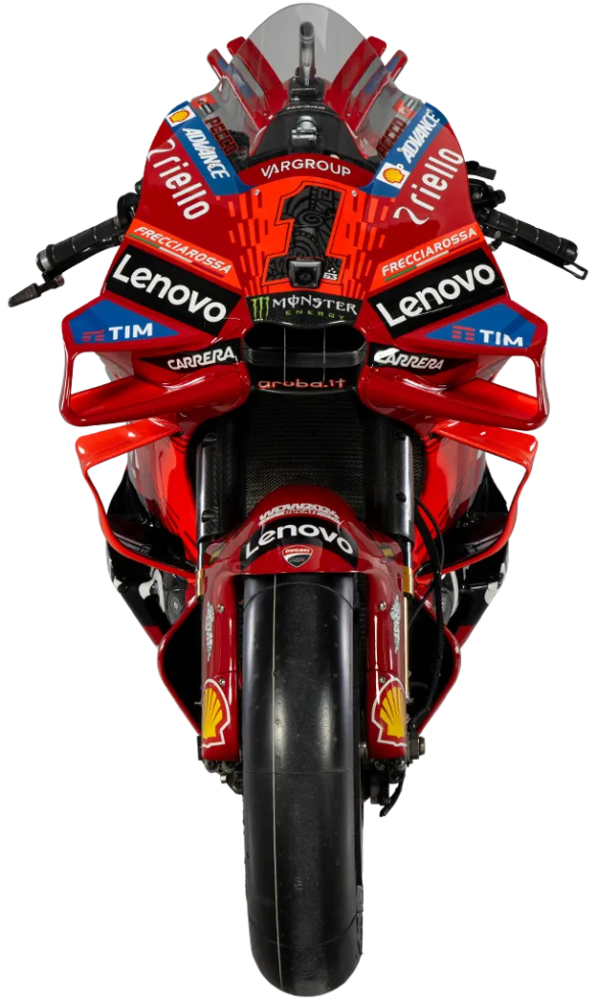

Dernière course
Grand Prix de France
Date: Dim. 12 Mai, 14:00
Circuit: Circuit Bugatti
Résultats des pilotes
-
1
 J. Martin
#89
Ducati
// 0:41:23.709 //
37 pts
J. Martin
#89
Ducati
// 0:41:23.709 //
37 pts
Résultats des constructeurs
- 1  Ducati 96 pts